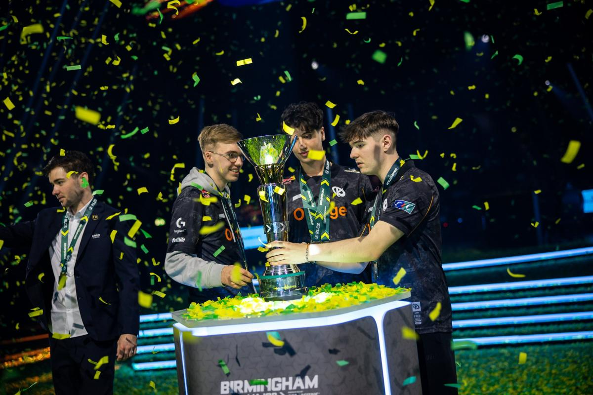
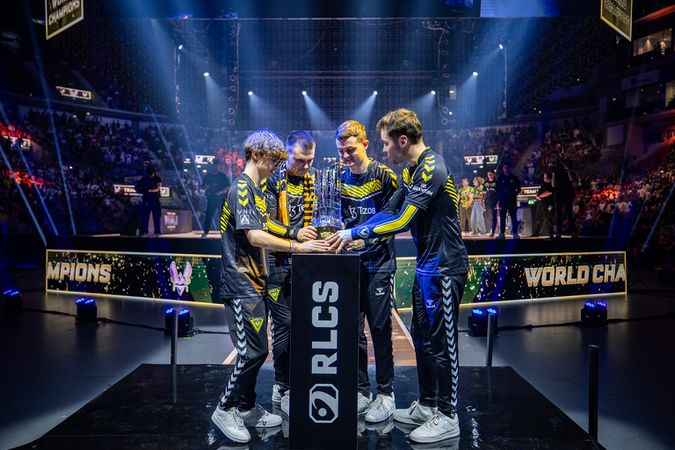
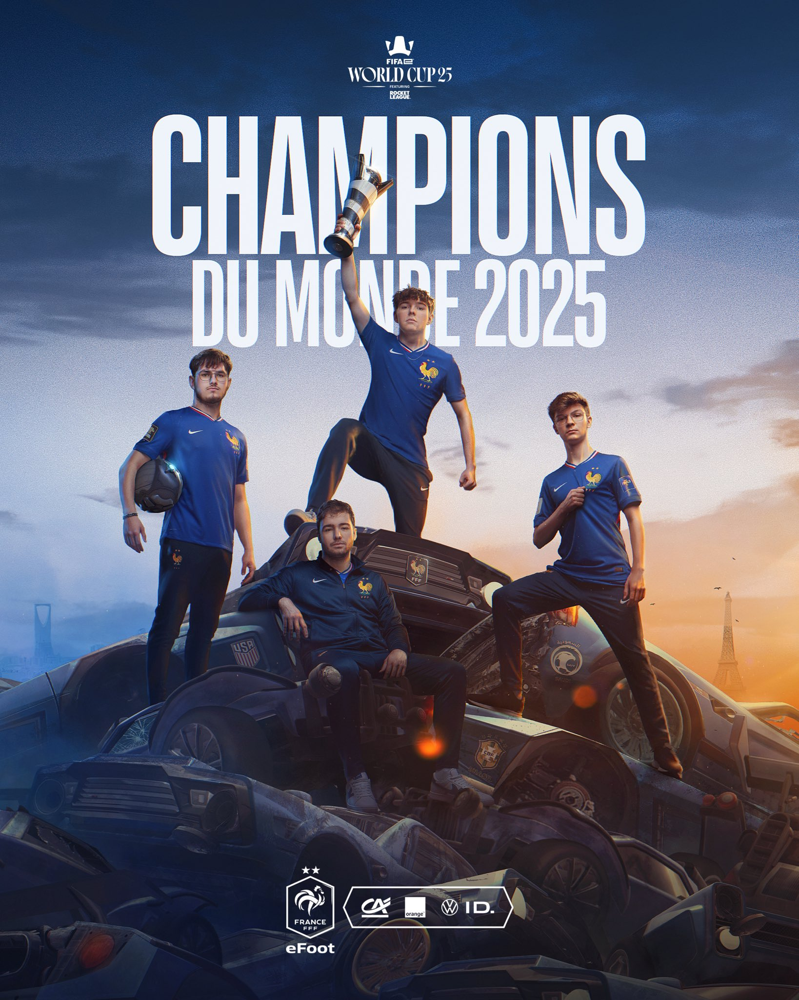

La scène esport de Rocket League
Rocket League possède une scène esport internationale très développée, organisée principalement autour des Rocket League Championship Series (RLCS). Ces compétitions rassemblent les meilleures équipes du monde et sont suivies par des millions de spectateurs.
La France occupe une place très importante dans l’esport Rocket League, avec plusieurs équipes et joueurs parmi les meilleurs au monde.
Karmine Corp
Karmine Corp est l’une des équipes françaises les plus populaires. Elle est connue pour sa forte communauté et ses performances régulières au plus haut niveau.
Team Vitality
Team Vitality est une organisation esport majeure qui a remporté de nombreux titres sur Rocket League, notamment en RLCS.
France – FIFAe World Cup 2025
En 2025, l’équipe de France a remporté la FIFAe World Cup Rocket League, confirmant la domination française sur la scène internationale.